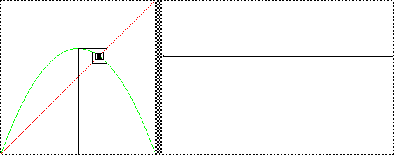

s = 2.75
Another fixed point, but here the orbit approaches the fixed point by spiraling in toward it. In the histogram, this spiral is represented by isolated points above and below the fixed point line.